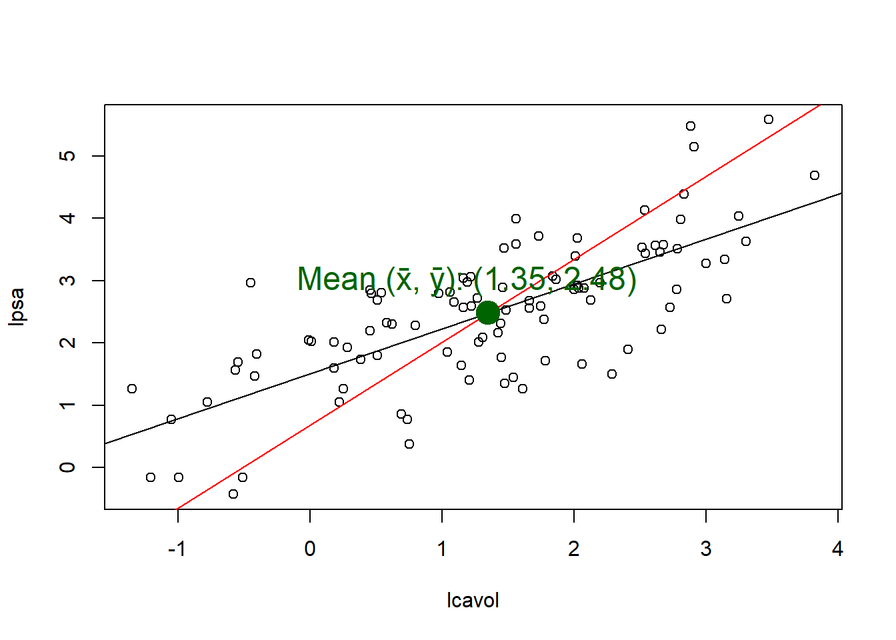

cat("Mean of residuals: ",signif(mean(residuals(lm_q1a)), 3),"\nMedian of residuals: ",signif(median(residuals(lm_q1a)), 3))
Mean of residuals: -1.56e-16
Median of residuals: -1.45
We expect the mean of the residuals from a linear model to be always zero (assuming we do not drop the intercept term, \(\beta_0\)), \(\bar{\hat{\epsilon}} = 0\). Unlike the mean of the residuals, which is mathematically guaranteed to be zero in an OLS model, the median is not. Consequently, the median is often close to zero but rarely, if ever, exactly zero.
q1e
Code
cat("Correlation of the residuals with the fitted values: ",signif(cor(residuals(lm_q1a), predict(lm_q1a)), 3))
Correlation of the residuals with the fitted values: 4.76e-17
The correlation is effectively zero because the residual vector \(\hat{\epsilon}\) and fitted value vector \(\hat{y}\) are orthogonal to each other.
q1f
Code
cat("Correlation of the residuals with income: ",signif(cor(residuals(lm_q1a), teengamb$income), 3))
Correlation of the residuals with income: 3.25e-17
Yes, it will always be zero because geometrically, the OLS model projects the outcome vector \(y\) onto the plane spanned by the set of all predictor variables. In our case, the income vector is part of that plane. Consequently, the fitted values vector \(\hat{y}\) lies on this plane while the residuals vector \(\hat{\epsilon}\) is orthogonal to the plane.
q1g
Female is coded as one and male is coded as zero.
Code
cat("For females, the difference in average weekly gambling between females","and males, holding other factors constant, is",signif(summary(lm_q1a)$coefficients[2], 3),"pounds.")
For females, the difference in average weekly gambling between females and males, holding other factors constant, is -22.1 pounds.
Call:
lm(formula = wage ~ educ + exper, data = uswages)
Residuals:
Min 1Q Median 3Q Max
-1018.2 -237.9 -50.9 149.9 7228.6
Coefficients:
Estimate Std. Error t value Pr(>|t|)
(Intercept) -242.7994 50.6816 -4.791 1.78e-06 ***
educ 51.1753 3.3419 15.313 < 2e-16 ***
exper 9.7748 0.7506 13.023 < 2e-16 ***
---
Signif. codes: 0 '***' 0.001 '**' 0.01 '*' 0.05 '.' 0.1 ' ' 1
Residual standard error: 427.9 on 1997 degrees of freedom
Multiple R-squared: 0.1351, Adjusted R-squared: 0.1343
F-statistic: 156 on 2 and 1997 DF, p-value: < 2.2e-16
q2b
Code
apply(uswages[, 1:3], 2, min)
wage educ exper
50.39 0.00 -2.00
q2c
Code
# When predictors are zero, the intercept is the prediction.cat("Predicted wage for a worker with no education and no experience:",format(round(summary(lm_q2a)$coef[1], 2), nsmall =2))
Predicted wage for a worker with no education and no experience: -242.80
It doesn’t make sense to report a negative wage value.
[1] wage educ exper race smsa ne mw so we pt
<0 rows> (or 0-length row.names)
According to the above output, the data confirms that while some workers have either zero education or zero experience, no worker has both simultaneously.
Therefore, the model’s prediction for this scenario is a pure extrapolation, as it’s forecasting for a data point that does not exist in the dataset.
# Need to unlogged the scaled wage valuesround(exp(coef(lm_q2h)['educ']), 2)
educ
1.09
An increase of one in education corresponds to multiplying the predicted response by \(1.09\). This indicates that if education were to be increased by one, holding experience constant, we expect a 9% increase in wage.
q2j
Code
lm_q2j <-lm(wage ~ educ + exper + ne + mw + we + so, data = uswages)summary(lm_q2j)
Call:
lm(formula = wage ~ educ + exper + ne + mw + we + so, data = uswages)
Residuals:
Min 1Q Median 3Q Max
-993.7 -238.8 -46.1 149.2 7244.1
Coefficients: (1 not defined because of singularities)
Estimate Std. Error t value Pr(>|t|)
(Intercept) -259.9178 51.9863 -5.000 6.24e-07 ***
educ 51.0931 3.3448 15.275 < 2e-16 ***
exper 9.8068 0.7507 13.064 < 2e-16 ***
ne 23.8538 26.3327 0.906 0.3651
mw -7.3453 25.7230 -0.286 0.7753
we 66.5168 26.9880 2.465 0.0138 *
so NA NA NA NA
---
Signif. codes: 0 '***' 0.001 '**' 0.01 '*' 0.05 '.' 0.1 ' ' 1
Residual standard error: 427.3 on 1994 degrees of freedom
Multiple R-squared: 0.1387, Adjusted R-squared: 0.1366
F-statistic: 64.24 on 5 and 1994 DF, p-value: < 2.2e-16
All four regional indicators sum to one because all mean are in one and only one region, thus by including all four indicators in the same model will run into the identifiability problem.
To resolve this, either drop one of the variable or drop the intercept term from the model.
plot(1:8, sigmas,xlab ="Number of Predictors",ylab ="Residual Standard Error",type ="l")
The RSE shows a sharp initial decrease with the number of predictors. The reduction continues, though not monotonically, reaching its minimum value when 7 predictors are included.”
Code
plot(1:8, rsquares,xlab ="Number of Predictors",ylab ="R-Squared",type ="l")
Because the Residual Sum of Squares (RSS) can only decrease or stay the same when predictors are added, R-squared is monotonically non-decreasing with the number of predictors
Q4
q4a
Code
lm_q4a_i <-lm(lpsa ~ lcavol, data = prostate)lm_q4a_ii <-lm(lcavol ~ lpsa, data = prostate)plot(lpsa ~ lcavol, data = prostate)abline(lm_q4a_i)abline(a =-coef(lm_q4a_ii)[1] /coef(lm_q4a_ii)[2],b =1/coef(lm_q4a_ii)[2],col ="red")mean_lcavol =mean(prostate$lcavol)mean_lpsa =mean(prostate$lpsa)points(x = mean_lcavol,y = mean_lpsa,pch =19,col ="darkgreen",cex =2.5)label_text =paste("Mean (x̄, ȳ): (",round(mean_lcavol, 2),", ",round(mean_lpsa, 2),")",sep ="")text(x =-0.1, # X-coordinate: Place it near the left side of the ploty =3, # Y-coordinate: Place it near the top of the plotlabels = label_text,col ="darkgreen", # Set a distinct coloradj =0, # Left-align the text (0 = left, 0.5 = center, 1 = right)cex =1.5# Character expansion (text size))

Since it is a lpsa against lcavol plot, we cannot simply call abline(lm(lcavol ~ lpsa, data = prostate)) for the second regression line since lm(lcavol ~ lpsa, data = prostate) predicts \(x\) from \(y\), that is, \(x = a + by\). Thus, to plot it against the existing \(y\) vs \(x\) plot, the equation needs to be re-arranged to:
\[x = a + by\]
\[by = x - a\]
\[y = \frac{-a + x}{b}\]
\[y = \frac{-a}{b} + \frac{1}{b} \cdot x\]
Since \(a\) is the intercept and \(b\) is the slope.
The point of intersection for these two regression lines is the point of the means \(\bar{x}, \bar{y}\) because this point is a fundamental property of any simple linear regression model calculated using the Ordinary Least Squares (OLS) method.
The function automatically coded - and + as \(0\) and \(1\) respectively.
q6b
Code
cor(X)
Warning in cor(X): the standard deviation is zero
(Intercept) x1+ x2+ x3+ x4+
(Intercept) 1 NA NA NA NA
x1+ NA 1 0 0 0
x2+ NA 0 1 0 0
x3+ NA 0 0 1 0
x4+ NA 0 0 0 1
The missing values are due to the intercept being constant across all observations. A constant variable has a standard deviation of zero. Because the correlation coefficient formula requires dividing by the product of the two variables’ standard deviations, the zero value in the denominator makes the correlation mathematically undefined.
The design matrix \(X\) is orthogonal, as evidenced by the zero off-diagonal entries in its correlation matrix. Orthogonality ensures that the estimated effect of each predictor is decoupled from the others. Therefore, the coefficient estimate for any given predictor is invariant to the inclusion or exclusion of other predictors in the model.
Q7
q7a
Code
data(truck, package ="faraway")head(truck)
B C D E O height
1 - - - - - 7.78
2 + - - + - 8.15
3 - + - + - 7.50
4 + + - - - 7.59
5 - - + + - 7.94
6 + - + - - 7.69
lm_q7a <-lm(height ~ B + C + D + E + O, data = truck)summary(lm_q7a, cor = T)
Call:
lm(formula = height ~ B + C + D + E + O, data = truck)
Residuals:
Min 1Q Median 3Q Max
-0.33125 -0.09427 0.01625 0.11917 0.25875
Coefficients:
Estimate Std. Error t value Pr(>|t|)
(Intercept) 7.63604 0.02291 333.316 < 2e-16 ***
B 0.11062 0.02291 4.829 1.85e-05 ***
C -0.08813 0.02291 -3.847 0.0004 ***
D -0.01437 0.02291 -0.627 0.5337
E 0.05187 0.02291 2.264 0.0288 *
O -0.12979 0.02291 -5.665 1.20e-06 ***
---
Signif. codes: 0 '***' 0.001 '**' 0.01 '*' 0.05 '.' 0.1 ' ' 1
Residual standard error: 0.1587 on 42 degrees of freedom
Multiple R-squared: 0.6433, Adjusted R-squared: 0.6008
F-statistic: 15.15 on 5 and 42 DF, p-value: 1.681e-08
Correlation of Coefficients:
(Intercept) B C D E
B 0.00
C 0.00 0.00
D 0.00 0.00 0.00
E 0.00 0.00 0.00 0.00
O 0.00 0.00 0.00 0.00 0.00
Code
coef(lm_q7a)
(Intercept) B C D E O
7.6360417 0.1106250 -0.0881250 -0.0143750 0.0518750 -0.1297917
q7b
Code
lm_q7b <-lm(height ~ B + C + D + E, data = truck)summary(lm_q7b, cor = T)
Call:
lm(formula = height ~ B + C + D + E, data = truck)
Residuals:
Min 1Q Median 3Q Max
-0.46104 -0.12479 -0.00479 0.14396 0.34896
Coefficients:
Estimate Std. Error t value Pr(>|t|)
(Intercept) 7.63604 0.03007 253.915 < 2e-16 ***
B 0.11062 0.03007 3.679 0.000648 ***
C -0.08813 0.03007 -2.930 0.005402 **
D -0.01437 0.03007 -0.478 0.635071
E 0.05187 0.03007 1.725 0.091717 .
---
Signif. codes: 0 '***' 0.001 '**' 0.01 '*' 0.05 '.' 0.1 ' ' 1
Residual standard error: 0.2084 on 43 degrees of freedom
Multiple R-squared: 0.3706, Adjusted R-squared: 0.3121
F-statistic: 6.331 on 4 and 43 DF, p-value: 0.0004258
Correlation of Coefficients:
(Intercept) B C D
B 0.00
C 0.00 0.00
D 0.00 0.00 0.00
E 0.00 0.00 0.00 0.00
Code
coef(lm_q7b)
(Intercept) B C D E
7.636042 0.110625 -0.088125 -0.014375 0.051875
The coefficients remains unchanged.
Examining the \(X\) matrix:
Code
cor(model.matrix(lm_q7a))
Warning in cor(model.matrix(lm_q7a)): the standard deviation is zero
(Intercept) B C D E O
(Intercept) 1 NA NA NA NA NA
B NA 1 0 0 0 0
C NA 0 1 0 0 0
D NA 0 0 1 0 0
E NA 0 0 0 1 0
O NA 0 0 0 0 1
The design matrix \(X\) is orthogonal, as evidenced by the zero off-diagonal entries in its correlation matrix
q7c
Code
truck_transformed <-transform(truck, A = B + C + D + E)head(truck_transformed)
B C D E O height A
1 -1 -1 -1 -1 -1 7.78 -4
2 1 -1 -1 1 -1 8.15 0
3 -1 1 -1 1 -1 7.50 0
4 1 1 -1 -1 -1 7.59 0
5 -1 -1 1 1 -1 7.94 0
6 1 -1 1 -1 -1 7.69 0
Code
lm_q7c <-lm(height ~ A + B + C + D + E + O, data = truck_transformed)coef(lm_q7c)
(Intercept) A B C D E
7.6360417 0.0518750 0.0587500 -0.1400000 -0.0662500 NA
O
-0.1297917
E is not estimable; A = B + C + D + E makes the predictors collinear, so R excluded E due to identifiability issues (from pg31: Predictors occurring later in the model formula are preferred for removal …)
Notice that \(\hat{\beta}_0\) is now the grand mean (the average of all observations combined). All because -1 and 1 are centred around 0, and the intercept represents the centre of the data.
Notice that \(\hat{\beta}_1\) is half the difference between the means of the two groups. (Since the difference in the x-axis “run” is now 2 units (from -1 to 1), the slope is halved compared to the 0/1 coding).
The first coding computes the mean of one group (\(\hat{\beta}_0\)) and then the difference in their means (\(\hat{\beta}_1\)).
The second computes an overall mean (\(\hat{\beta}_0\)) while the second parameter represents the difference from that overall mean (\(\hat{\beta}_1\)).
The second coding is more symmetrical (but both result in the same fitted values and residuals).